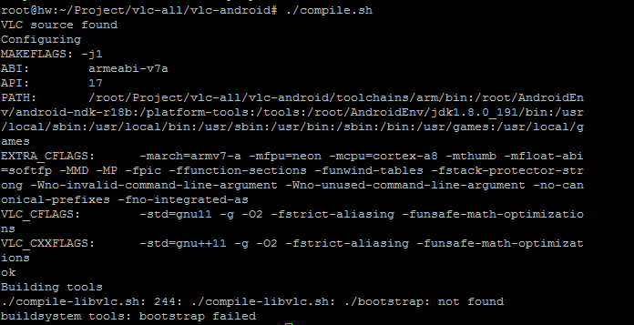
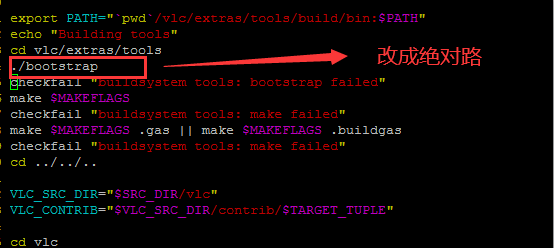

<div class="padding-tb-10 line-height">
    编译VLC  3.1.7的android版本，出现脚本找不到，实际文件加载文件下面
    <br>
    
    <br>
    服务器下载vlc源码太慢。使用本机window7下载git clone，出现了很多找不到的文件的提示
    <br>
    
    <br>
    接下来很多编译的文件需要使用dos2unix
    <pre><code class="Bash">
        find ~/Project/vlc-all/vlc-android/  -name "*.am"|xargs dos2unix
    </code></pre>
</div>
<script>hljs.initHighlightingOnLoad();</script>